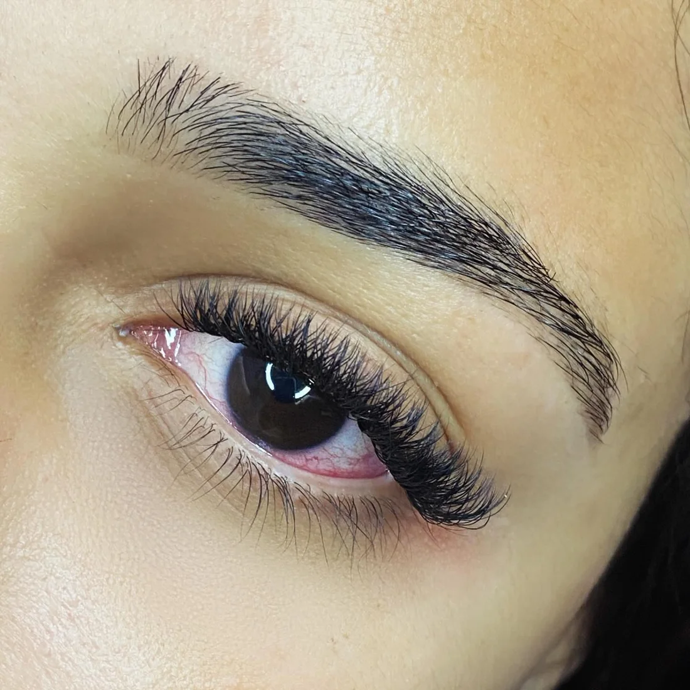
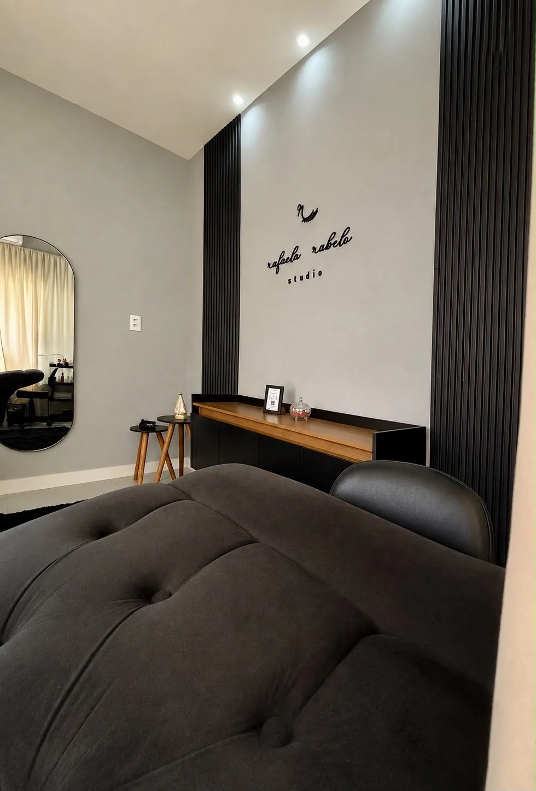

Acordar com o olhar pronto, todo dia.
Autoestima e praticidade através da extensão de cílios. Oito técnicas, do volume mais natural ao mais marcante, escolhidas junto com você para o seu formato de olho.
- Sem rímel, sem curvex
- 8 técnicas de volume
- Estúdio próprio em Arcos

Clientes reais, direto da maca.
Fotos tiradas no estúdio logo depois da aplicação ou da manutenção. Escolha uma técnica para ver só ela.
Fotos do Instagram da Rafaela (@rafaela7rabelo e @rafaelarabelostudio).
Do natural ao marcante.
Escolha como você quer o seu olhar. A Rafaela confirma na avaliação, olhando o formato do seu olho e a força dos seus fios naturais.
Cada técnica, um olhar diferente.
O que muda de uma para outra é o formato dos fios, quantos vão em cada cílio natural e o desenho final. Veja como funciona cada uma.

Um tempo só seu, num estúdio pensado para isso.
Lash designer em Arcos. Cada aplicação começa pelo desenho: o formato do olho, o que você gosta e a sua rotina decidem a técnica. Depois é deitar, fechar os olhos e descansar.
- Mapeamento do olhar. O desenho é feito para o seu rosto, não copiado de foto.
- Maca confortável. Você passa o procedimento deitada, de olhos fechados.
- Manutenção marcada. Já sai sabendo quando voltar para o olhar continuar cheio.
Pequenos cuidados, cílios por mais tempo.
No dia do procedimento
- Venha sem maquiagem
- Evite usar o celular
- Roupa confortável
- Evite abrir os olhos
- Venha sem pressa
- Dedique esse tempo a você
Fases dos cílios após a aplicação
Super alinhados e lindos.
Alguns fios desalinhados, outros começam a cair. É o ciclo natural dos seus cílios.
Está na hora da manutenção. Os fios novos recebem extensão e o volume volta a ficar cheio.
Monte o seu horário em quatro passos.
Você escolhe aqui e a mensagem chega pronta no WhatsApp da Rafaela. O horário exato ela confirma por lá.
O que todo mundo pergunta.
A extensão estraga os meus cílios?
Não, quando é bem aplicada. Cada fio de extensão é colado em um cílio natural, sem encostar na pele, e o peso é escolhido de acordo com a força dos seus fios. Por isso a técnica muda de pessoa para pessoa.
Quanto tempo dura?
Os cílios naturais caem e nascem o tempo todo, e a extensão sai junto. Na primeira semana fica tudo alinhado, entre o 8º e o 14º dia alguns fios começam a cair, e entre o 15º e o 20º dia é a hora da manutenção.
Qual a diferença entre aplicação e manutenção?
A aplicação é a primeira vez, com o olhar todo montado do zero. A manutenção repõe os fios que caíram e mantém o volume cheio, por isso é mais rápida.
Nunca fiz. Qual técnica eu escolho?
Para a primeira vez, o volume brasileiro costuma ser o mais pedido, por ser leve e natural. Mas a decisão é feita junto com a Rafaela, olhando o seu olho. Use o “Qual combina com você” acima para chegar com uma ideia.
Preciso ir sem maquiagem?
Sim. Venha sem maquiagem nos olhos, com roupa confortável e sem pressa. Durante o procedimento você fica de olhos fechados, então evite o celular.
Quanto custa?
Os valores de cada técnica, da aplicação e da manutenção são passados pelo WhatsApp. Tabela de preços a confirmar com a Rafaela.
Arcos, MG
Endereço a confirmar
Com hora marcada
Dias e horários a confirmar
Mesmo que você não tenha um evento importante essa semana, você tem. Cuide-se e arrume-se.